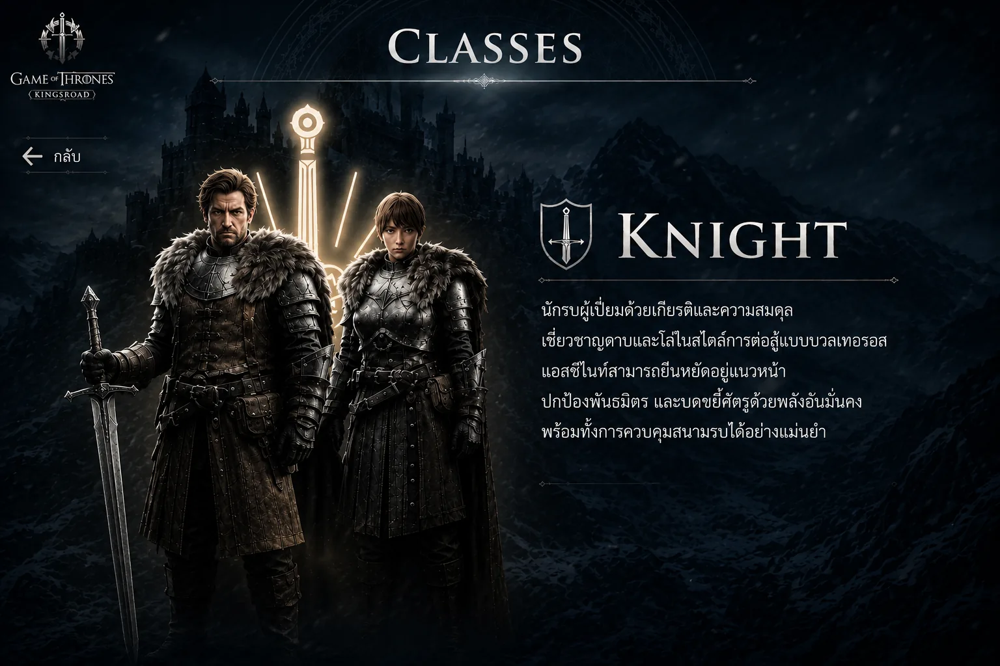
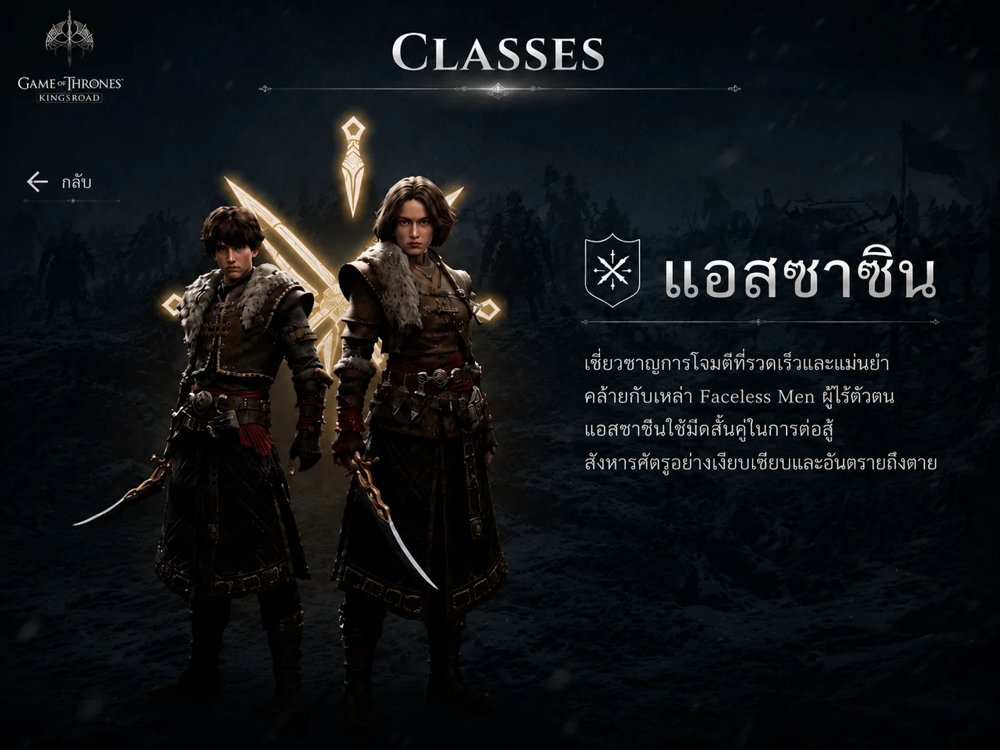
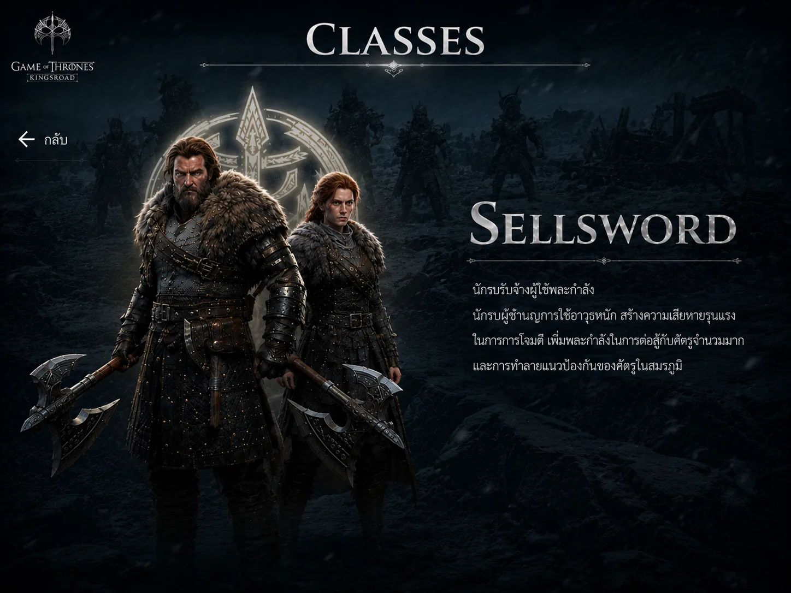

Knight คืออัศวินผู้สวมเกราะหนักที่ถูกสร้างมาเพื่อเป็นแนวหน้าในการต่อสู้ ด้วยพลังชีวิตและเกราะที่สูง ทำให้สามารถรับความเสียหาย ปกป้องเพื่อนร่วมทีม และยืนปะทะกับศัตรูระยะประชิดได้อย่างมีประสิทธิภาพ ด้วยสกิลอย่าง Riposte Stance ทำให้ Knight เป็นคลาสที่เล่นง่ายที่สุดสำหรับคอนเทนต์กว่า 90% ของเกม โดยเฉพาะการต่อสู้กับศัตรูประเภทมนุษย์
โจมตีระยะประชิดสร้างความเสียหายรุนแรง พร้อมโบนัสดาเมจเพิ่มต่อศัตรูที่สวมเกราะ เหมาะสำหรับจัดการศัตรูที่แข็งแกร่ง
เพิ่มค่าพลังป้องกันและลดความเสียหายที่ได้รับ รับการโจมตีหนักได้อย่างมีประสิทธิภาพ
กดค้างเข้าท่าตั้งรับ Parry การโจมตีของศัตรูมนุษย์อัตโนมัติและสวนกลับ ใช้ร่วมกับชุด Sentinel จะ Parry การโจมตีสีเหลืองได้
เพิ่มคริติคอลและดาเมจคริติคอลให้ทั้งทีม พร้อมลดค่าป้องกันศัตรู 30% นาน 12 วินาที (เวอร์ชัน Boost Morale+)

Assassin เป็นคลาสที่มีพลังโจมตีสูงที่สุดในเกม เหมาะกับผู้เล่นที่ชอบความเร็วและ Burst Damage รุนแรง ใช้มีดคู่เป็นอาวุธหลัก กำจัดศัตรูได้อย่างรวดเร็ว เหมาะกับการแข่งขันคะแนนใน Altar of Memories และ World Boss แต่ต้องอาศัยการหลบที่แม่นยำ เพราะศัตรู Parry การโจมตีของ Assassin ได้บ่อยกว่าคลาสอื่น
สร้างสถานะ Sanguine Crush ทำให้ศัตรูรับความเสียหายเพิ่ม 10% (เมื่อใช้ Weaken+) เหมาะทั้งเล่นเดี่ยวและทีม
ใช้สถานะ Sanguine Crush สร้าง Burst Damage รุนแรง เหมาะสำหรับสู้บอส
สร้างม่านควัน เพิ่มความเสียหายต่อศัตรูที่อยู่ภายใน (เมื่อใช้ Shadow Assault)
เอฟเฟกต์ติดตัวของ Strike Combo 1 ทำให้ศัตรูรับความเสียหายเพิ่มขึ้น 15%

Sellsword ใช้อาวุธขนาดใหญ่สร้างความเสียหายมหาศาล การโจมตีแต่ละครั้งหนักแน่นและรุนแรง คอมโบมีคุณสมบัติ Hit-Stun Immunity ทำให้โจมตีต่อได้แม้ถูกโจมตีจากการโจมตีเบาหรือการโจมตีสีเหลือง แม้จะช้ากว่าคลาสอื่น แต่เมื่อสู้กับศัตรูที่มี Momentum เท่ากันหรือต่ำกว่า จะสร้างความเสียหายได้อย่างยอดเยี่ยม
เพิ่มความเสียหาย 22.5% และดาเมจคริติคอล 27.5% ต่อเป้าหมายเดี่ยว (เมื่อใช้ Merciless Strike+)
เพิ่มพลังโจมตี ความเร็วโจมตี คริติคอล และดาเมจคริติคอล เปลี่ยน Sellsword เป็นเครื่องจักร DPS
สร้างความเสียหายวงกว้าง ทำงานร่วมกับเอฟเฟกต์ Destruction เพื่อดาเมจเพิ่มเติม
สร้างสถานะ Shock สะสมครบเปลี่ยนเป็น Destruction เพิ่มความเสียหายต่อศัตรูที่ติดสถานะ